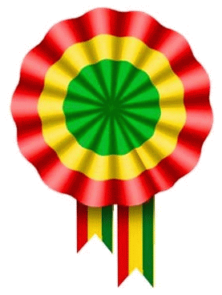
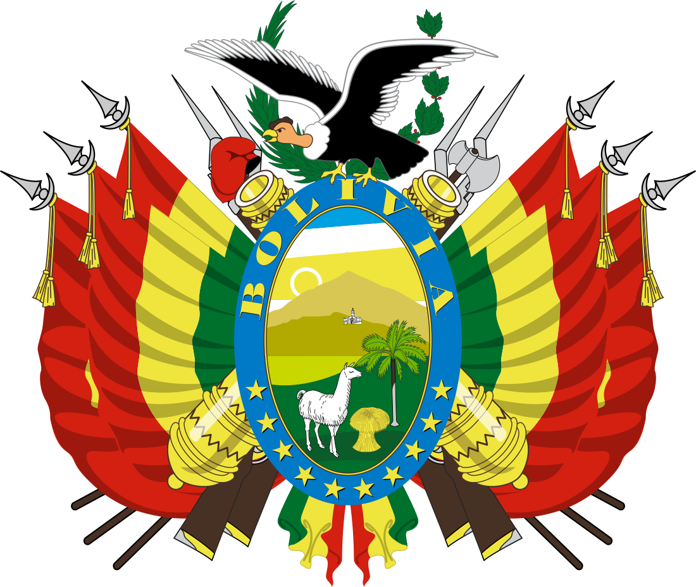
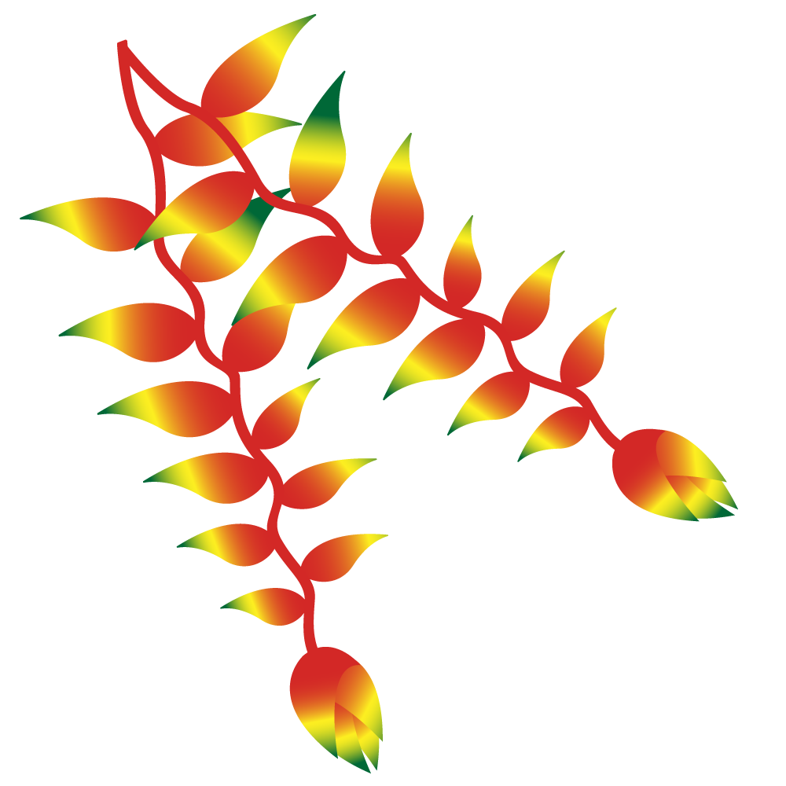

Bolivianos: el hado propicio |
|
ESCARAPELA  |
ESCUDO NACIONAL  |
Al estruendo marcial que ayer fuera |
PATUJU  |
link de la imagen https://i0.wp.com/blog.howlanders.com/wp-content/uploads/2021/01/carnaval-oruro-bolivia.jpg?w=1450&ssl=1 |
|
Loor eterno a los bravos guerreros, |